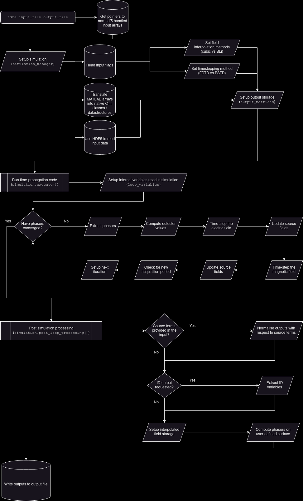

- Generated by
 1.14.0
1.14.0
|
TDMS
Time Domain Maxwell Solver
|
Welcome to the developer documentation for TDMS, the Time Domain Maxwell Solver. These pages contain the C++ API documentation as well as some other useful information for developers.
The physics background and numerical methods used by TDMS are described in this pdf document (the source is in doc/latex). In terms of the code, tdms is a C++ binary that can be installed in the PATH. We build with CMake to be moderately platform-independent. We run continuous integration builds and tests on Windows, Ubuntu, and MacOS.
We depend on ...
We follow semantic versioning: major, minor, patch. Major versions may contain changes to the API and UI, minor versions contain new features but preserve backwards-compatibility of UI, patches are bugfixes.
So (for example) version v1.2.0 is major version 1, minor version 2, and the zeroth patch. v1.2.0 will be backwards-compatible with v1.1.99.
Mechanics: Version control is via git tags on the main branch and propagated to the C++ source code via CMake. Release notes are kept in the GitHub release page. If release hotfixes or release bugfixes are needed and main has advanced too far to follow the rules of a semantic version patch, then make a release branch release/vX.Y at (or close to) the tag of the version to patch. The release branch can have the important fixes git cherry-picked over and can be tagged with a patch version (independent of the changes in main). More details on this procedure are in Issue #317.
As well as official releases, a placeholder "version" is assigned to every commit on every development branch, or can be supplied at compile-time (which takes the highest precedence).
If on a development branch then the placeholder version is <branchname>_<tag> if tagged, or <branchname>_<commit hash> if not tagged. This is useful when debugging problems introduced between commits (with the assistance of git bisect).
We try to stick to Google style C++ wherever practicable. There is one exception: we prefer #pragma once at the top of each header (because it's one line rather than three and is almost the standard anyway).
Please keep doxygen-style comments in the headers.
And please document the header itself with at least:
You can quickly check the documentation for your changes look correct with:
You should be able to find and read what you've changed. Don't worry about doxygen for the source files (although obviously please do write helpful comments there). We have been putting doxygen comments in the unit-test source files wherever sensible.
For C++ we've found ClangFormat works well. For Python code (e.g. in the system tests) we use black.
To apply automatic code styling to staged changes in git we recommend pre-commit. If you don't have it already:
Then from the root repository directory you can add the pre-commit hooks with
Once you've checked the code out, compile following the user instructions. If you're building the HEAD of main you'll also need to install HDF5 with:
on Linux or
on MacOS.
(This is omitted from the user-facing docs because we don't have a stable version of TDMS with HDF5 yet.)
There are extra build options for developers:
You may need to help CMake find MATLAB/fftw/libhdf5 etc.
Warning These instructions are a bit experimental. Please use with care (and report anything that's wrong here)!
If you want to test changes on UCL's Myriad (and/or don't have MATLAB on your pesonal machine) you can try these instructions. Firstly, you will probably want to forward your ssh agent for your github ssh key. To do this, you first need to run the following your local machine:
And once you're on Myriad:
If you get the following error (or similar)
it's because the MATLAB module is interfering with the SSL certificates (and we clone over https by default). This issue is known and reported. As a workaround, we've added the build option -DGIT_SSH=ON to switch to git clone over ssh instead.
The C++ main function is in main.cpp however the main algorithm code is in the execute() method of the SimulationManager class, in execute_simulation.cpp.
Broadly speaking, the main function - and thus a call to (or execution of) tdms - can be broken down into the following steps:
The SimulationManager class governs steps 2 through 5.
A flowchart that further breaks down the above steps can be viewed below. 
An instance of SimulationManager essentially supports one tdms simulation, however functionality is divided across its member variables. These objects themselves group variables by functionality, purpose, and necessary scope. The list below provides a description of these objects (with parentheses denoting the member name in the SimulationManager instance):
The role of SimulationManager is to handle how these objects interact in the main loop.
SimulationManager instances begin by initialising the inputs attribute. Based on this attribute, they set up PSTD/FDTD variables and prepare the outputs object for writing. Some members of the outputs objects are used as the buffer for the field and phasor data whilst the main loop is running, with the final state of this buffer being the output values. Other attributes of the outputs object that require information from the main loop are prepared (dimensions are determined, etc) at this stage but not set.
Once initialised, the execute() method can be called. This will create an instance of LoopVariables that is scoped to this function; which in turn sets up the variables that are required in the main loop but not needed elsewhere. This avoids bloating the execute() method with a large number of variable declarations and setup, as well as simplifying tear-down at the end of the loop. timers track the speed of execution of the main loop, and report to the logging.
Upon completing execute() successfully, the post_loop_processing() method of SimulationManager writes the data to the outputs attributes that were not used as buffers during the main loop.
From here, the write_outputs() method exports the data in outputs to the desired file.
At this point, the instance of SimulationManager can be allowed to go out of scope. In practice, main() terminates here and the destructor handles the tear-down of MATLAB memory blocks.
We have two levels of tests: unit tests, and full system tests.
The unit tests use catch2 macros. See tests/unit for good examples in the actual test code.
To write a new test, as a rough sketch you need:
The doxygen-style comments will be included in this developer documentation.
To run the unit tests, compile with -DBUILD_TESTING=ON. Then run ctest from the build directory or execute the test executable ./tdms_tests.
It's good practice, and reassuring for your pull-request reviewers, if new C++ functionality is covered by unit tests.
The tdms/tests/unit/benchmark_scripts directory contains scripts that produce input data for the unit tests, or that provide benchmarks for the units that are tested.
To generate the necessary test inputs; change into the benchmark_scripts directory and run,
The C++ unit tests require the presence of a .mat or .hdf5 file to read/write data from/to during testing. The locations of these files are coded into tests/include/unit_test_utils.h, but the files themselves are not committed to the repository - they can be created by running the setup_unit_tests.m and create_hdf5_data.py scripts. These scripts can then be updated to add/remove/edit the data available to the unit tests:
The benchmark_ scripts perform band-limited interpolation (BLi) using MATLAB's interp function. TDMS's interpolation schemes are based off this MATLAB function (specficially, in the coefficients the scheme uses to interpolate), and are thus used to benchmark the accuracy of the scheme.
If you want to check the coverage of the unit tests, then build with -DCODE_COVERAGE=ON. Then when you run ctest or the tdms_tests executable, GCDA coverage files are generated. They are not really for humans to parse but can be summarised with other tools. In our build system we use lcov, a frontend for gcov reports. If you don't have lcov, you can install it with aptitude or homebrew (sudo apt install lcov or brew install lcov).
To get a coverage report in the terminal: execute the unit tests and then confirm you generated .gcda files...
they're probably somewhere like build/CMakeFiles/tdms.dir/src.
Then generate the coverage report with
You'll notice it also counts the dependencies. You can filter these (lcov --remove) if you don't want them to appear in the statistics:
But you don't need to worry about this too much. When you open a pull-request, codecov will report. And you can browse the codecov TDMS pages online.
To run the unit tests, go to the tdms/tests/matlab directory and use the command:
In the utils folder, you'll find small MATLAB functions to edit the data/pstd_input_file{2,3}D.m files during the testing phase.
The iteratefdtd_matrix function has different ways to generate source terms from an input file. However, some combinations of variables provided can be incompatible, resulting in errors or contradictory information. The unit test test_iteratefdtd_matrix_source_combinations goes through each possible combination of source-related inputs, checking for errors or valid input combinations. The combinations and expected results are listed in the table below.
| TD-field | Using FDTD | compactsource | efname | hfname | Raises error? | Error info |
|---|---|---|---|---|---|---|
| 1 | 1 | 1 | 1 | 1 | 1 | Cannot specify hfname if compact source |
| 1 | 1 | 1 | 1 | 0 | 0 | |
| 1 | 1 | 1 | 0 | 1 | 1 | Cannot specify hfname if compact source |
| 1 | 1 | 1 | 0 | 0 | 0 | |
| 1 | 1 | 0 | 1 | 1 | 0 | |
| 1 | 1 | 0 | 1 | 0 | 1 | If not compact source, both efname and hfname must be specified |
| 1 | 1 | 0 | 0 | 1 | 1 | If not compact source, both efname and hfname must be specified |
| 1 | 1 | 0 | 0 | 0 | 0 | |
| 1 | 0 | 1 | 1 | 1 | 1 | Cannot specify hfname if compact source |
| 1 | 0 | 1 | 1 | 0 | 0 | |
| 1 | 0 | 1 | 0 | 1 | 1 | Cannot specify hfname if compact source |
| 1 | 0 | 1 | 0 | 0 | 0 | |
| 1 | 0 | 0 | 1 | 1 | 1 | Cannot use FDTD & not compactsource |
| 1 | 0 | 0 | 1 | 0 | 1 | Cannot use FDTD & not compactsource |
| 1 | 0 | 0 | 0 | 1 | 1 | Cannot use FDTD & not compactsource |
| 1 | 0 | 0 | 0 | 0 | 1 | Cannot use FDTD & not compactsource |
| 0 | 1 | 1 | 1 | 1 | 1 | Cannot specify hfname if compact source |
| 0 | 1 | 1 | 1 | 0 | 0 | |
| 0 | 1 | 1 | 0 | 1 | 1 | Cannot specify hfname if compact source |
| 0 | 1 | 1 | 0 | 0 | 1 | Must specify efname if compact source and TD-field not specified |
| 0 | 1 | 0 | 1 | 1 | 0 | |
| 0 | 1 | 0 | 1 | 0 | 1 | If not TD-field and using FDTD, must specify both efname and hfname |
| 0 | 1 | 0 | 0 | 1 | 1 | If not TD-field and using FDTD, must specify both efname and hfname |
| 0 | 1 | 0 | 0 | 0 | 1 | If not TD-field and using FDTD, must specify both efname and hfname |
| 0 | 0 | 1 | 1 | 1 | 1 | Cannot specify hfname if compact source |
| 0 | 0 | 1 | 1 | 0 | 0 | |
| 0 | 0 | 1 | 0 | 1 | 1 | Cannot specify hfname if compact source |
| 0 | 0 | 1 | 0 | 0 | 1 | Must specify efname if compact source and TD-field not specified |
| 0 | 0 | 0 | 1 | 1 | 1 | Cannot use FDTD & not compactsource |
| 0 | 0 | 0 | 1 | 0 | 1 | Cannot use FDTD & not compactsource |
| 0 | 0 | 0 | 0 | 1 | 1 | Cannot use FDTD & not compactsource |
| 0 | 0 | 0 | 0 | 0 | 1 | Cannot use FDTD & not compactsource |
The full system tests are written in Python 3, and call the tdms executable for known inputs and compare to expected outputs. We use pytest and our example data is provided as zip files on zenodo.
There are a few python packages you will need before you are able to run the tests, which can be installed by executing:
if you don't already have them. You'll then need to compile tdms with -DBUILD_TESTING=ON. Once compiled, the system tests can be run by invoking pytest and pointing it to the tdms/tests/system directory. For example, from the build directory:
The test_system.py script runs each system test in sequence.
When you run the tests for the first time, the test data is downloaded to tdms/tests/system/data (and will be ignored by git). Subsequent runs of the tests will not re-download unless you manually delete the zip file(s).
The test data contains reference input files which contain arrays for the incident electric field, the computational grid, and so on (needed by the simulation). The files have been generated by a trusted version of the relevant MATLAB scripts. The data also contains reference output files which have been generated by a trusted version of TDMS - the system tests check output against reference outputs. I.e. regression testing: that new changes have preserved the functionality of TDMS.
The system tests for tdms are configured with yaml files in the data/input_generation/ directory. They are named config_XX.yaml where XX matches the ID of the system test, which themselves are named arc_XX by historical convention. These config files define a number of variables, parameters, and filenames that will be required when running the system tests - for a detailed breakdown of their syntax, see the annotated config_01.yaml file. This should also match the test_id field in the configuration file itself. The reference outputs or reference data are a collection of .mat files, produced from the reference inputs by a trusted version of the tdms executable. We test for regression using these reference files.
A given system test typically has two calls to the tdms executable; one for when there is no scattering object present, and one for when there is some obstacle. More than two runs in a test might be due to the use of band-limited interpolation over cubic interpolation. Each call to the executable has a reference input and reference output. In the scripts, a given execution is called by tests.utils.run_tdms which wraps a subprocess.Popen.
The workflow of a particular system test arc_XX is:
Due to licensing issues regarding running MATLAB on GitHub runners, we cannot use matlabengine to regenerate the reference input data during CI. (Although we are currently thinking of removing the MATLAB dependency which will then enable us to resolve this issue). The work-in-progress test_regen.py workflow can still be run locally through pytest, however in addition to requirements.txt you will also need to install matlabengine. See the MathWorks page link for detailed requirements. You will need (at least) Python >= 3.8 and a licensed version of MATLAB.
The system tests rely on .mat input files that are generated through a series of MATLAB function calls and scripts. This directory contains the functionality to automatically (re)generate this input data, which serves two purposes:
(Re)generating the input data for a particular test case, arc_XX, is a three-step process:
The run_bscan function is inside the bscan/ directory.
The matlab/ directory contains functions that run_bscan will need to call on during the creation of the input data. This in particular includes the iteratefdtd_matrix function, which does the majority of the work in setting up gridfiles, illumination files, and the .mat inputs themselves.
The generate_test_input.py file contains .py files that the system tests can invoke to regenerate the input data. Since the system test framework uses pytest, but the data generation requires MATLAB (for now), we use Python to read in and process the information that each test requires, and then call run_bscan with the appropriate commands from within Python.
The regenerate_all.py file will work through all of the config_XX.yaml files in the directory and regenerate the input .mat data corresponding to each.
The remaining config_XX.yaml and input_file_XX.m files are as mentioned in the previous section. These contain the information about each test that Python and run_bscan will need to regenerate the input files.